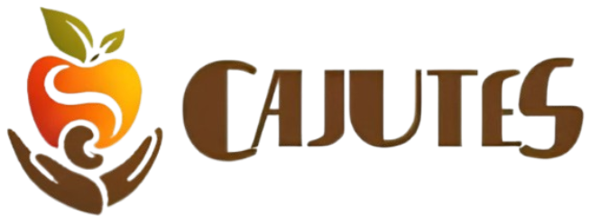
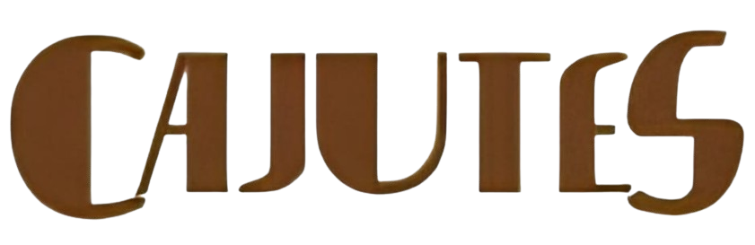
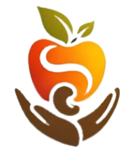
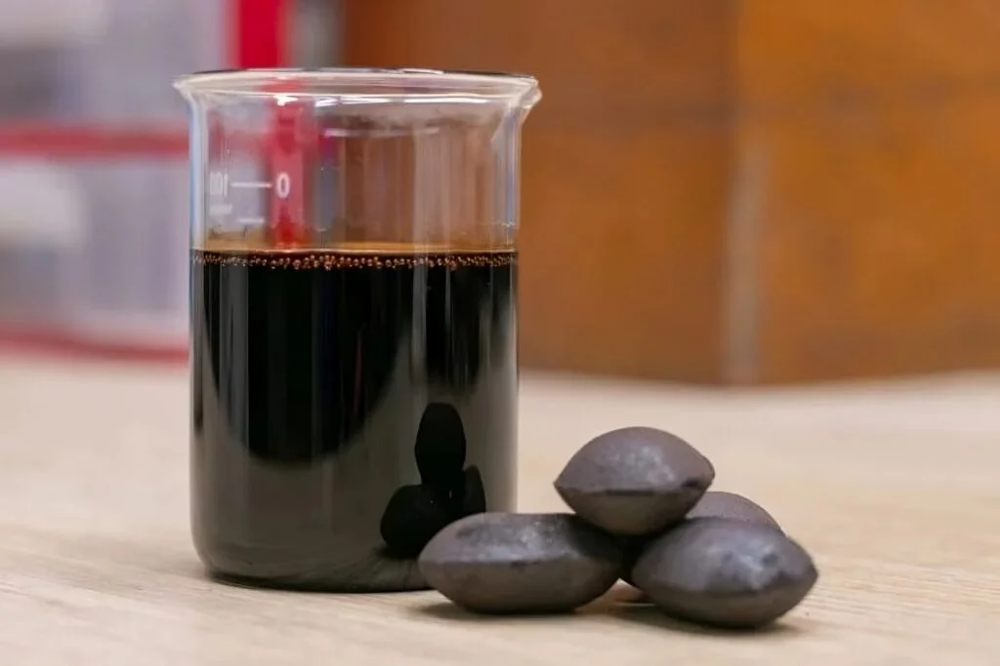
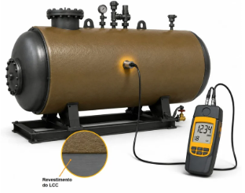

Uma proposta que une o Líquido da Castanha de Caju e sensores ultrassônicos para contribuir com a proteção e o monitoramento de superfícies metálicas.
Conheça o projeto
O CAJUTES nasceu da busca por uma solução sustentável para um dos problemas enfrentados pelo ambiente industrial: a corrosão de superfícies metálicas.
O projeto propõe o desenvolvimento de um revestimento anticorrosivo à base do Líquido da Castanha de Caju (LCC), associado a um sistema automatizado de monitoramento por sensores.
Dessa forma, a proposta une sustentabilidade, tecnologia e eficiência para contribuir com a conservação dos maquinários e reduzir gastos relacionados à manutenção.
Reaproveitamento do Líquido da Castanha de Caju.
Revestimento destinado à proteção de superfícies metálicas.
Sensores para acompanhar o desgaste dos equipamentos.
O Líquido da Castanha de Caju, conhecido como LCC, é um subproduto de origem regional que pode ser aproveitado como alternativa para aplicações sustentáveis na indústria.
No CAJUTES, ele está relacionado ao desenvolvimento de um revestimento anticorrosivo para superfícies metálicas.

O Líquido da Castanha de Caju (LCC) é um subproduto obtido a partir da castanha de caju. No projeto CAJUTES, ele é estudado como matéria-prima para uma alternativa sustentável de proteção de superfícies metálicas.
A proposta consiste na aplicação de um revestimento à base de LCC sobre superfícies metálicas expostas a condições que podem favorecer a corrosão.
Aproveitamento de um subproduto da cadeia produtiva do caju.
O LCC apresenta potencial como alternativa acessível para aplicações industriais.
O revestimento busca contribuir para a prevenção da corrosão.
O sensor ultrassônico funciona por meio da emissão e recepção de ondas ultrassônicas. A partir dessas ondas, é possível realizar medições de espessura em superfícies metálicas.
No CAJUTES, as medições serão realizadas periodicamente em pontos determinados dos equipamentos.
Dessa forma, será possível acompanhar possíveis reduções de espessura provocadas pela corrosão e comparar os valores obtidos ao longo do tempo.

A técnica pode ser utilizada em equipamentos novos ou já existentes, desde que apresentem condições adequadas para a medição.
O acompanhamento da espessura pode auxiliar na identificação da necessidade de manutenção.
Explore a representação visual da proposta CAJUTES. Nesta área serão apresentados o modelo tridimensional e um vídeo demonstrativo do funcionamento do sistema.
Quer conhecer melhor o CAJUTES? Entre em contato com a nossa equipe.